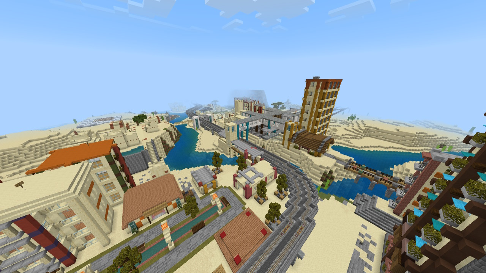

砂砦市(ささいし)は砂漠の砂漠の首都である。
地名の由来は旧市街地区に立っている砂岩でできた砦である。
(新市街の砂岩のビル群が砂の砦のようだと例えられることもあるがそれは別である)

↑新市街上空から南西方面。中央に見える駅は国鉄及び市電の北道駅である
砂砦市(ささいし)
人口 1232人(2023年1月現在)
人口集積地
砂砦市は国内有数の人口集積地であり、首都が置かれている。
2023年1月現在、国内人口の45.1%が砂砦市に住んでいる。
| 市地区名 | 人口 |
|---|---|
| 砂砦市 | 1232 |
| 新市街(砂砦地区) | 833 |
| 旧市街北部(北道地区) | 248 |
| 旧市街南部(赤川地区) | 108 |
| 芥子地区 | 43 |

中央市街という通称は北道,砂砦両地区をさす。

市を貫くのは北道川と赤川、砂漠とサバンナの境目にある。
北道地区
砂漠の砂漠の原点である。
市の中心部を流れる北道川の西岸を占めており、サバンナの丘に囲まれた地区である。
北道という地名は、旧市街を南北に貫く赤木筋という道の北の端に位置していることに由来している。
北側には国鉄のターミナル北道駅が、西側には塀がある。
この国は中央広場と周りの数件の家からなる村から始まり、市電の中央広場駅-赤川駅(隣の赤川地区)はこの国最初の鉄道である。
原始の人口は40人とされているが、詳細は不明である。